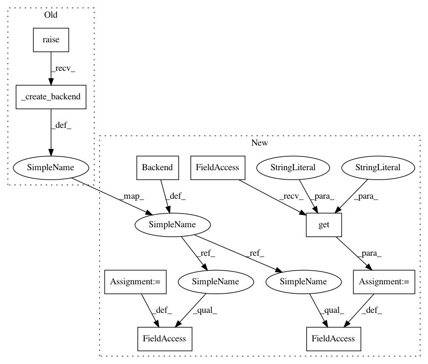

05db715004e2aa699935fc3ec4ba5d0dd101a365,python/mead/tasks.py,EncoderDecoderTask,_create_backend,#EncoderDecoderTask#,414
Before Change
return reader
def _create_backend(self):
backend = super(EncoderDecoderTask, self)._create_backend()
if backend.name == "pytorch":
import baseline.pytorch.seq2seq as seq2seq
self.config_params["preproc"]["show_ex"] = baseline.pytorch.show_examples_pytorch
self.config_params["preproc"]["trim"] = True
After Change
return reader
def _create_backend(self):
backend = Backend()
backend.name = self.config_params.get("backend", "tensorflow")
if backend.name == "pytorch":
import baseline.pytorch.embeddings as embeddings
import baseline.pytorch.seq2seq as seq2seq
self.config_params["preproc"]["show_ex"] = baseline.pytorch.show_examples_pytorch
self.config_params["preproc"]["trim"] = True
else:
// TODO: why not support DyNet trimming?
self.config_params["preproc"]["trim"] = False
if backend.name == "dynet":
import _dynet
import _dynet
dy_params = _dynet.DynetParams()
dy_params.from_args()
dy_params.set_requested_gpus(1)
if "autobatchsz" in self.config_params["train"]:
dy_params.set_autobatch(True)
batched = False
else:
batched = True
dy_params.init()
backend.params = {"pc": _dynet.ParameterCollection(), "batched": batched}
import baseline.dy.embeddings as embeddings
import baseline.dy.seq2seq as seq2seq
self.config_params["preproc"]["show_ex"] = baseline.dy.show_examples_dynet
else:
import baseline.tf.embeddings as embeddings
import baseline.tf.seq2seq as seq2seq
self.config_params["preproc"]["show_ex"] = baseline.tf.create_show_examples_tf(self.primary_key)
from mead.tf.exporters import Seq2SeqTensorFlowExporter
backend.exporter = Seq2SeqTensorFlowExporter
backend.embeddings = embeddings
backend.task = seq2seq
return backend
def initialize(self, embeddings):
In pattern: SUPERPATTERN
Frequency: 4
Non-data size: 9
Instances
Project Name: dpressel/mead-baseline
Commit Name: 05db715004e2aa699935fc3ec4ba5d0dd101a365
Time: 2018-09-30
Author: dpressel@gmail.com
File Name: python/mead/tasks.py
Class Name: EncoderDecoderTask
Method Name: _create_backend
Project Name: dpressel/mead-baseline
Commit Name: 05db715004e2aa699935fc3ec4ba5d0dd101a365
Time: 2018-09-30
Author: dpressel@gmail.com
File Name: python/mead/tasks.py
Class Name: TaggerTask
Method Name: _create_backend
Project Name: dpressel/mead-baseline
Commit Name: 05db715004e2aa699935fc3ec4ba5d0dd101a365
Time: 2018-09-30
Author: dpressel@gmail.com
File Name: python/mead/tasks.py
Class Name: ClassifierTask
Method Name: _create_backend
Project Name: dpressel/mead-baseline
Commit Name: 05db715004e2aa699935fc3ec4ba5d0dd101a365
Time: 2018-09-30
Author: dpressel@gmail.com
File Name: python/mead/tasks.py
Class Name: EncoderDecoderTask
Method Name: _create_backend
Project Name: dpressel/mead-baseline
Commit Name: 05db715004e2aa699935fc3ec4ba5d0dd101a365
Time: 2018-09-30
Author: dpressel@gmail.com
File Name: python/mead/tasks.py
Class Name: LanguageModelingTask
Method Name: _create_backend